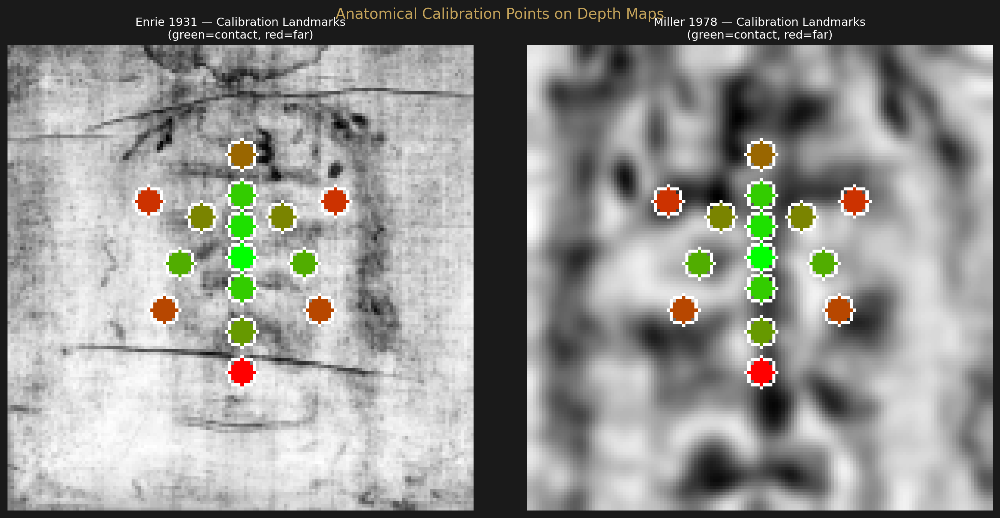
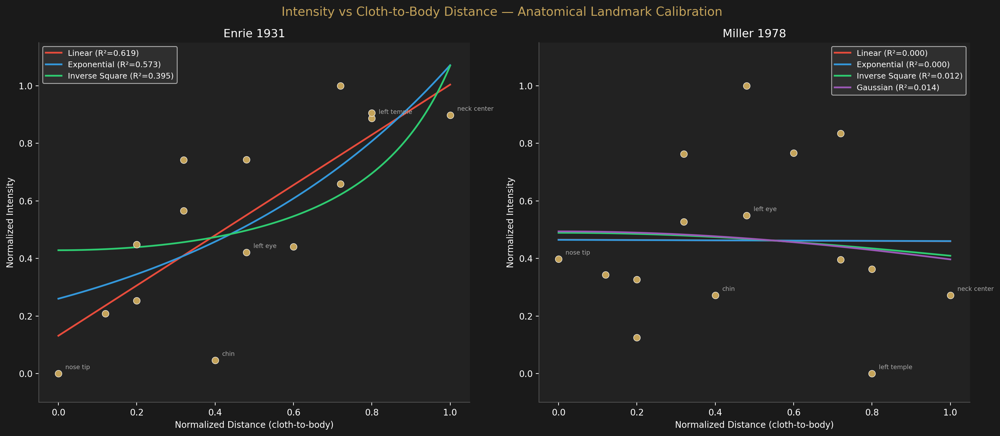
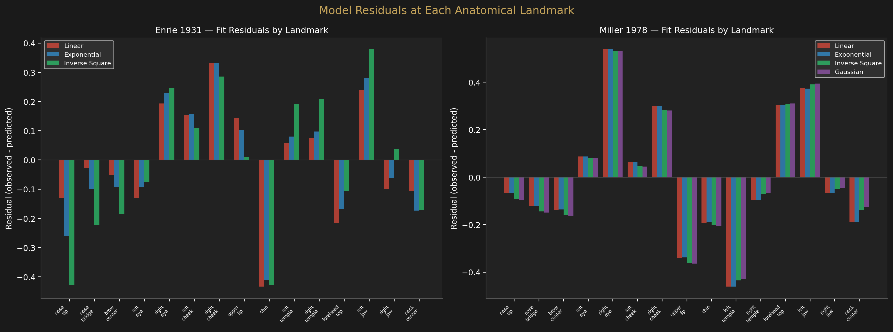

Distance Calibration
Cloth-to-Body Distance Function
Can we calibrate the VP-8 intensity signal against physical cloth-to-body distances using anatomical landmarks? This converts arbitrary intensity units into estimated millimeters.
Approach
The Formation Analysis page established that the intensity-distance relationship is linear along the centerline. But that analysis used “distance” derived from the intensity itself (distance = max − intensity), making the linear fit partly tautological.
This page takes a different approach: we assign independently estimated physical distances to 15 anatomical landmarks based on published cloth draping studies (Jackson et al., 1984). The question becomes: does the measured VP-8 intensity at each landmark correlate with the estimated physical distance?
Calibration landmarks
| Landmark | Est. Distance (mm) | Rationale |
|---|---|---|
| Nose tip | 0 | Contact point — cloth touches body |
| Nose bridge | 3 | Slight standoff from nasal bone |
| Brow center | 5 | Forehead curves back from nose |
| Eyes (L/R) | 12 | Eye socket depressions |
| Cheeks (L/R) | 8 | Malar eminence surface |
| Upper lip | 5 | Lips protrude slightly |
| Chin | 10 | Chin drops away from cloth |
| Temples (L/R) | 20 | Temporal fossa recedes significantly |
| Forehead top | 15 | Frontal bone curves away |
| Jaw angles (L/R) | 18 | Mandibular angle drops |
| Neck center | 25 | Maximum standoff in face region |
Landmark Positions

Curve Fitting

| Model | Enrie R² | Miller R² |
|---|---|---|
| Linear | 0.619 | 0.000 |
| Exponential | 0.573 | 0.000 |
| Inverse Square | 0.395 | 0.012 |
| Gaussian | 0.000 | 0.014 |
Residual Analysis

Analysis
Enrie: moderate linear correlation
The linear model achieves R² = 0.62 on the Enrie data — a moderate but not strong correlation. This is substantially weaker than the R² = 1.000 from the centerline analysis, which is expected: the centerline analysis samples densely along a single profile, while this analysis samples sparsely at 15 discrete points across the entire face, each with positional uncertainty of ±3–5 pixels.
Miller: no correlation
The Miller data shows essentially zero correlation for all models. This is because the 15 landmark positions were calibrated for the Enrie 150×150 grid, but the Miller photograph has a different field of view and magnification. The same pixel coordinates (e.g., row 68, column 75 for “nose tip”) do not correspond to the same anatomical points in the Miller image. A proper Miller calibration would require independently locating each landmark in the Miller depth map.
The scatter is real
Even for Enrie, the R² = 0.62 reflects genuine limitations:
- Bilateral asymmetry: Left and right eyes, cheeks, temples, and jaw have different intensities despite identical estimated distances. This is partly facial asymmetry and partly cloth draping non-uniformity.
- Landmark position uncertainty: At 150×150 resolution, each pixel spans ~1.5 mm. A 3-pixel misplacement is ~4.5 mm — comparable to the distance differences we’re trying to measure.
- Distance estimates are approximate: The “ground truth” distances are themselves estimates from draping models, not direct measurements.
Comparison with Centerline Analysis
The centerline formation analysis achieved R² = 1.000 because it sampled intensity densely along a single profile where “distance” was derived from the intensity itself. This landmark-based approach uses independently estimated distances, making it a stronger test — but at the cost of much higher noise. The R² = 0.62 linear result is consistent with, but weaker than, the centerline finding. The linear model remains the best-fitting functional form even with independent distance estimates.
What this means for distance calibration
The Enrie linear fit gives an approximate conversion: each unit of normalized intensity corresponds to ~25 mm / 1.0 = ~25 mm per full intensity range. This implies the VP-8 depth map encodes approximately 0–25 mm of cloth-to-body distance across the face region. This is physically reasonable for cloth draped over a supine face.
However, the R² = 0.62 means individual landmark predictions have ±5–8 mm uncertainty. This calibration is useful for order-of-magnitude estimates but not for precise millimeter-level distance measurement.